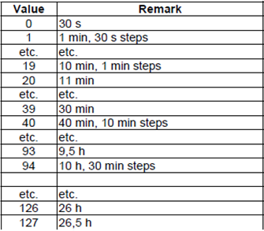
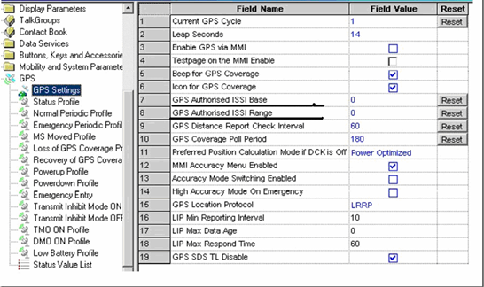
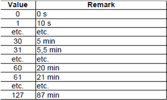

目前我们在用的终端手台类型有MOTO和Sepura两种，要让这两种手台都能正常使用eTRA GIS调度系统， 手台的烧号必须要注意以下几点：
1）Sepura手台烧号在network里设置了缩位拨号，建议在烧号软件中将command ISSI设置的位数大于手台ISSI号码位数，例如手台号码位数为5位，则设置command ISSI位数为大于或等于5位，不够时则在command ISSI前填充0。
2）在烧号时，sepura手台中的Default report distance 不能设置为0，如果设置为0将距离上报的功能关闭，建议设置为0.1(100M)。
3）在烧号时，sepura手台GPS空中接口使用操作注意事项有以下几点：
立即下拉：使用手台烧号的调度号码控制。
使能接口：使用手台烧号的调度号码控制。
修改目的地：使用手台烧号的调度号码控制。
修改间隔：使用手台烧号的调度号码控制，其中修改间隔的原则如下：（页面输入的时间为30s的整数，大于30s的整数则按照30s取模，小于30s则相当于30s设置，参数具体参照图1：

图1 sepura手台修改间隔参数说明
1）在烧号时，MOTO手台GPS空中接口使用操作注意事项有以下几点：
立即下拉：发起立即定位的调度用户ISSI号码XX必须满足如图2所示条件，例如GPS Authorised ISSI Base值为A,GPS Authorised ISSI Range 值为B,则A<= XX<=B

图2 MOTO手台烧号ISSI参数说明
使能接口：进行控制的调度号码如图2所示。
修改目的地和修改间隔：进行控制的调度号码如上图所示。
修改时间间隔的原则：进行控制的调度号码如上，其中修改间隔的原则如下：（页面输入的时间为10s的整数，不是10s的整数则按照10s取模，小于10s则按10s设置），参数具体参照图3：

图3. MOTO手台修改间隔参数说明
Copyright © 2012 Eastcom, Inc. All rights reserved. |
||